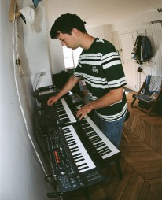

Inani
Inani is a concept hardware brand created by art director Camille Vercken de Vreuschmen. I composed the music and designed the sound for its ad spot, working with hardware synthesizers, samples and effects.
Ormeau
Ormeau is a short film directed by Juliette Roux, for which I did the music, sound design, and ambient effects. The film evokes the memory of a forgotten society, so I built an ethereal, atmospheric soundscape from layered pads, white noise, and richly textured field recordings to conjure a hazy, dreamlike mood.
-1.75
Original music and sound design for -1.75, a seven-part photography project by Jeanne Seurot. I composed three pieces designed as immersions into the images. The project unfolds across seven editions, each with its own visual atmosphere, so I responded with three hybrid tracks, woven from natural sounds and field ambiences, that give a narrative frame to the journey through the photographs.
KARMA8A
KARMA8A is a French bouldering brand. For its FW24 collection, built around a rawer aesthetic, founder René Grincourt filmed my friend and fellow artist Eutrop and me as we composed the track, and that session became part of the campaign itself. The result is a short ad driven by house textures and a quirky vocoder.
Ananas Service
Here is my first album with my fellow artist Eutrop. It’s an experimental electronic journey across several genres, including French touch, techno and hip hop. Écouter sur Spotify

Infos
Bienvenue dans mon portfolio ! Je m’appelle Constantin et je vis à Paris. En tant que compositeur et producteur, je travaille sur divers projets originaux : supervision musicale, compositions et arrangements pour d’autres musiciens. Je travaille essentiellement avec des synthétiseurs, mon violon et le logiciel Ableton, avec une prédilection pour la manipulation des samples. Ma double formation en management et en musicologie me permet de penser les projets musicaux sur leurs deux fronts : l’exigence artistique et les enjeux stratégiques d’une commande. N’hésitez pas à me contacter pour toute question ou envie de collaboration.
Formation
ESSEC Business School — Master in Management
2021–2025
ENS Ulm — Musicologie
2024–2027